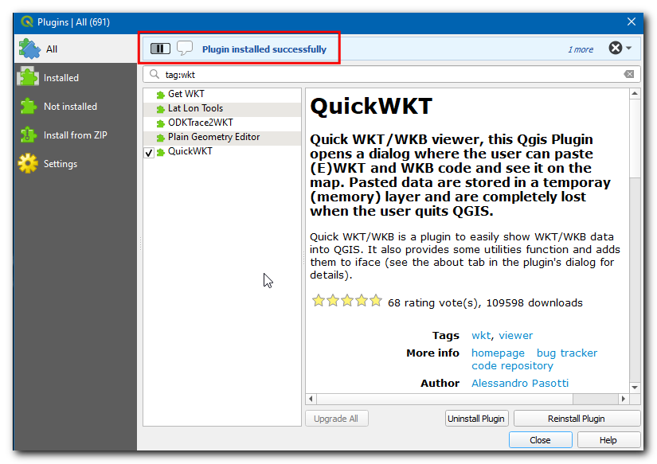
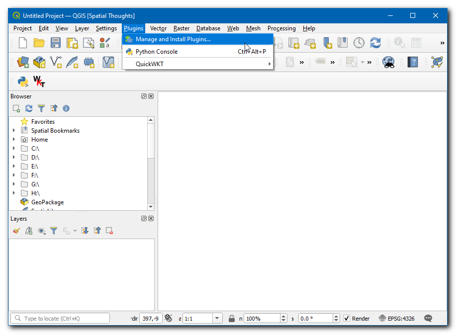
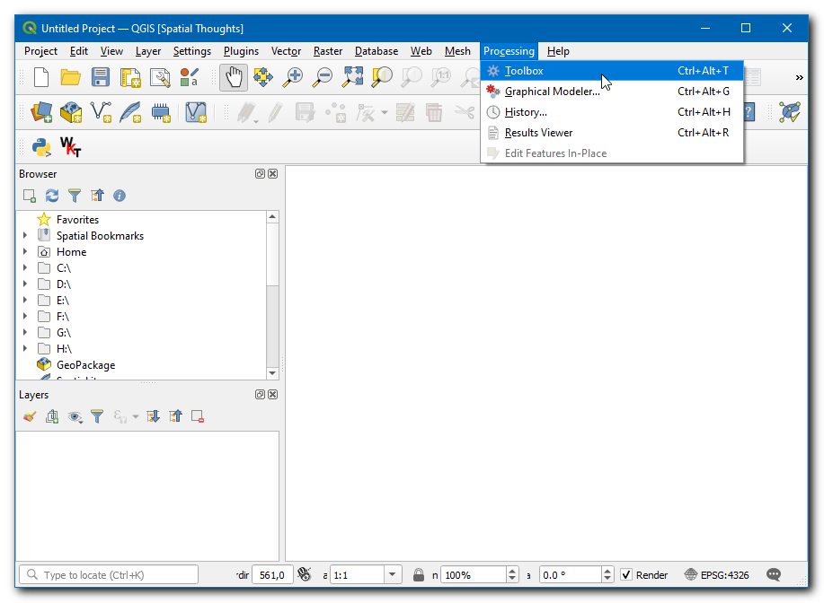
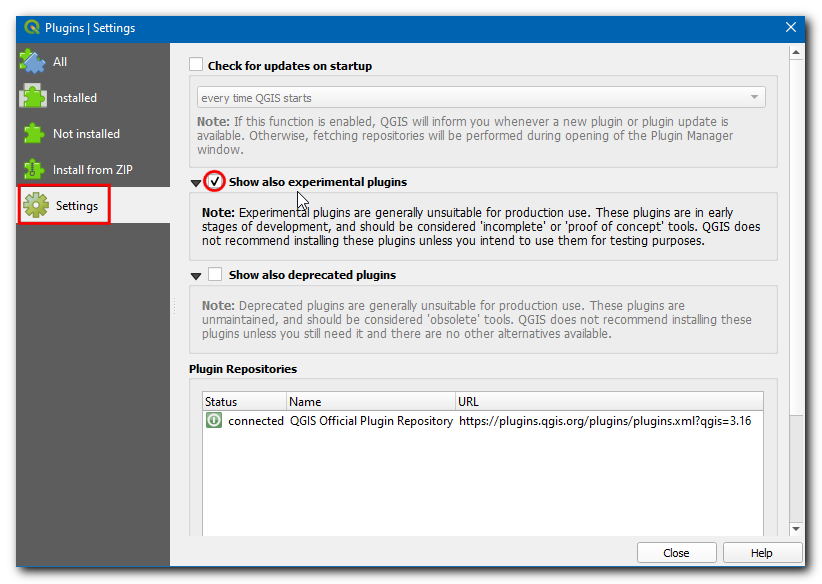
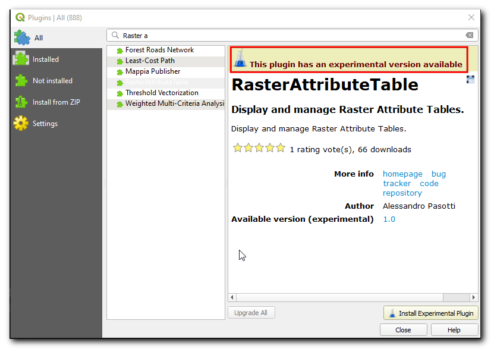
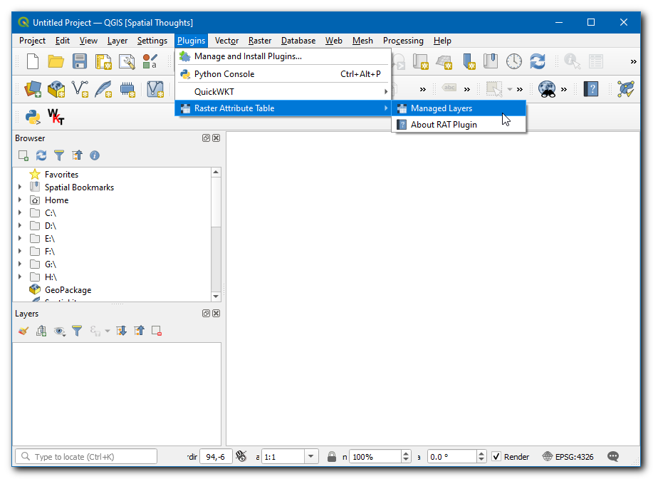
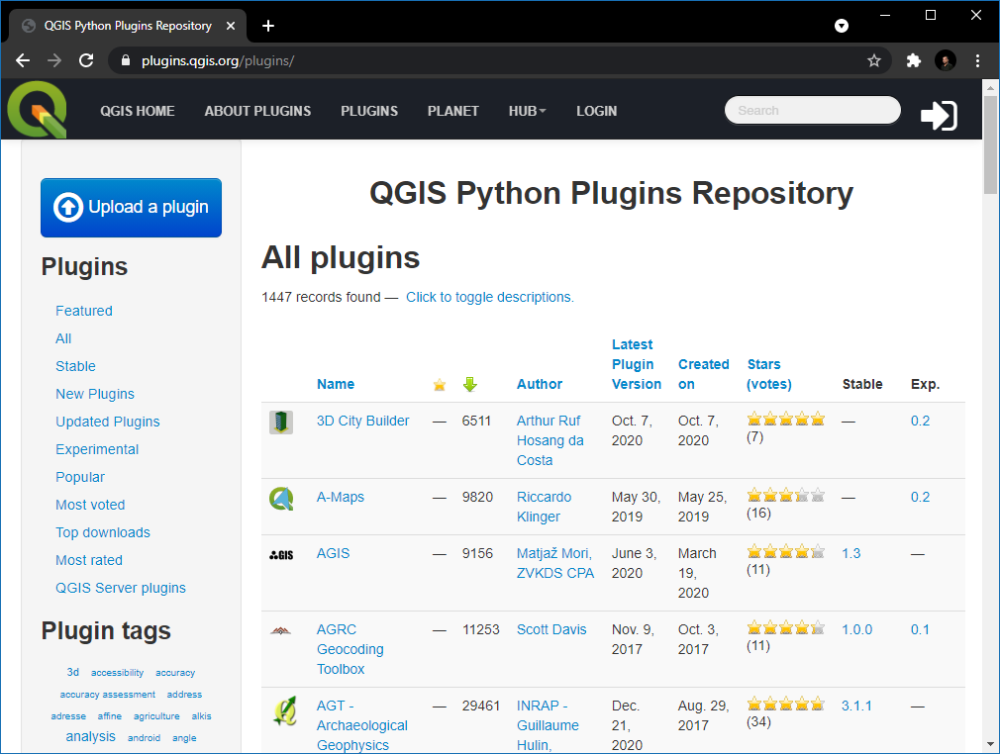

Using Plugins (QGIS3)¶
Plugins in QGIS add useful features to the software. Plugins are written by QGIS developers and other independent developers who want to extend the core functionality of the software. These plugins are then uploaded to the QGIS Plugin Repository, reviewed by the community members, and then made available to all QGIS users.
Overview of the task¶
In this tutorial, you will learn how to enable Core Plugins as well as download and install Third-party Plugins. You will also learn how to locate and run the plugins once they are installed.
Procedure¶
Core Plugins¶
Core plugins are already part of the standard QGIS installation. To use these, you just need to enable them.
Open QGIS. Click on . to open the Plugins dialog.

Even if this is your first time using QGIS, you will see a lot of plugins listed under the Installed tab. This is because they are Core Plugins and were installed during QGIS installation.

Let’s enable one of the plugins. Check on the checkbox next to Topology Checker Plugin. This will enable the plugin and you will be able to use it. One thing to note is that plugins can insert menu items at various locations and create new panels and toolbars. Sometimes it is difficult to know how to find the newly enabled tools. One clue is to look in the plugin description. Here the description says Category: Vector. That indicates that the plugin would be found under the Vector menu once enabled. Also, these plugins cannot be uninstalled. Click Close.

참고
Many core plugins are not enabled by default. Plugins get loaded on QGIS startup, so enabling many plugins can increase the startup time. Disable all plugins you don’t need for a better experience.
Now that the Topology Checker Plugin is enabled, you can go to the to use the functionality added by the plugin.

Third-party Plugins¶
Third-party plugins are available in the QGIS Plugins Repository and need to be installed by the users before using them. Third-party plugins can be broadly categorized into the following sub-groups.
GUI Plugins
Processing Plugins
Experimental Plugins
We will now learn how to install plugins from each of these categories.
GUI Plugins¶
These plugins get installed to one of the Menus or Toolbars. We will now install a plugin called QuickWKT that allows users to copy/paste WKT geometry strings and visualize them.
Open QGIS. Click on . to open the Plugins dialog.

Click on the All tab. Here you will see a list of plugins listed.

For this tutorial, let’s find and install a plugin called QuickWKT. As you start typing qui in the search box, you will see the search results below. Click on the QuickWKT.

Now information about the plugin will be displayed, this plugin is a WKT viewer. Click the
wktin Tags, this will fetch all the plugins under this tag.
Now, click Install Plugin in the QGIS Plugins dialog box. Now a QGIS info message bar will display a message
Plugin installed successfully.If you noticed, there was no mention of the plugin category in the description. That makes it hard to determine how to access the newly installed plugin. Most plugins are installed under the Plugins menu in QGIS. Click on and you will see the newly installed plugin. The plugin also adds a button to the Plugins toolbar. You may also use that button to access the plugin.

Processing Plugins¶
These plugins will add new algorithms (i.e. tools) to the Processing toolbox of QGIS. This is the preferred way to build plugins that add new spatial analysis functionality. Rather than a standalone tool, a processing toolbox algorithm can be used as a part of the model builder or in a batch processing mode for automating GIS workflows. We will now install a processing plugin.
Open QGIS. Click on . to open the Plugins dialog.
Click on the All tab, and search for ORS tools.

Click on the plugin and click Install Plugin in the QGIS Plugins dialog box. On successful installation, a QGIS info message bar will display a message
Plugin installed successfully.
The plugin will add a folder with tools in the Process Toolbox. Go to .
There are many groups of tools, and the ones that have the QGIS logo next to them are called Native algorithms. You will notice a new folder at the bottom called ORS Tools. This is added by the plugin we just installed and is known as a Provider. QGIS Processing Plugins are able to add new Providers - such as ORS Tools - which can contain one or more new processing algorithms.

Expand the ORS tool folder to explore all available tools under it. You can double-click on the tool to run it.

참고
Plugins can add new tools as well as new menu items. The ORS Tools plugin also adds a new menu item for configuration under the menu .
Experimental Plugins¶
Sometimes you are looking for a specific plugin, but cannot find it in the All tab. It may be because the plugin is marked Experimental. Here is how to install an experimental plugin.
Open Plugins by . Click on the Settings tab. You will see an option called Show also experimental plugins. Click the checkbox next to it, to enable it.
Now switch back to the All tab and search for ‘RasterAttributeTable’ plugin.

Click on the plugin, you can see it is marked as experimental. Click Install Experimental Plugin and close the Plugins dialog box.

참고
Use experimental plugins with caution. The experimental plugin may not be well tested or under rapid development.
You can use the plugin by going to from .

Exploring the QGIS Plugins Repository¶
QGIS has a rich ecosystem of 3rd-party plugins. The official QGIS plugin repository contains over 1000 plugins. You can browse and discover new plugins that may be of interest to you. We will now explore the plugin repository.
Go to the QGIS Plugins Repository, and click PLUGINS.

This page lists all available plugins. You can click on the headings to sort the plugins by different attributes.
There are also different sections such as Featured, Popular etc. to allow for the discovery of interesting plugins. Click on the New Plugins, this will fetch all the latest plugins. You can select any plugin of your choice. For this tutorial, we will pick RasterAttributeTabel.

Switch to Versions, here the history of releases and available versions are listed. Many plugins are only compatible with certain versions of QGIS. The Minimum QGIS version lists the QGIS version requirement for the plugin.

Once you find a plugin, you can open QGIS and install it from the Plugin Manager as shown in the previous sections.
If you want to give feedback or share your experience with this tutorial, please comment below. (requires GitHub account)